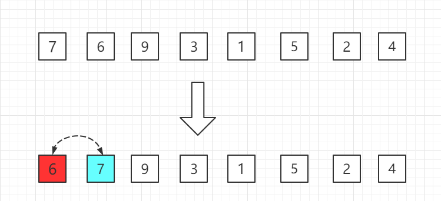
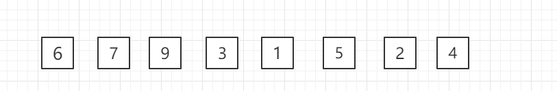

Insertion Sort
Insertion Sort, also generally known as straight insertion sort, is an efficient algorithm for sorting a small number of elements.
Insertion sort is one of the simplest sorting methods. Its basic idea is to insert a record into an already sorted ordered table, thereby forming a new ordered table with the number of records increased by 1.
In its implementation, a double-layer loop is used. The outer loop iterates over all elements except the first one, and the inner loop searches for the insertion position in the ordered table before the current element and performs movement.

How it works
The core idea of insertion sort is"building an ordered sequence"It logically divides the array (or list) to be sorted into two parts:
- Sorted partInitially, the first element of the array is usually considered to be an ordered sequence by itself.
- Unsorted partFrom the second element to the last element.
The algorithm willRepeatedly insert the first element of the unsorted part into the correct position of the sorted part.Until the unsorted part becomes empty, the entire array becomes sorted.
Applicability
The average time complexity of insertion sort is alsoO(n^2), and the space complexity is constant orderO(1)The specific time complexity is also related to the orderliness of the array.
In insertion sort, when the array to be sorted is already ordered, it is the optimal case. You only need to compare the current number with the previous number, and a total of comparisons needed at this time isN-1times, and the time complexity isO(N)The worst case is when the array to be sorted is in reverse order. At this time, the number of comparisons is the largest. The worst case isO(n^2)。
Process Diagram
Assume that the previousn-1(wheren>=2) numbers are already sorted. Now insert thennumber into the previously sorted sequence, then find its appropriate position, so that the sequence after inserting the nth number is also sorted.
The process of inserting all elements in this way until the entire sequence is sorted is called insertion sort.
The entire process of insertion sort from small to large is shown in the figure:
First pass:Starting from the 6 at the second position, it is smaller than the 7 in front, so swap positions.

Second pass:The 9 at the third position is larger than the 7 at the previous position, so no swap is needed.

Third pass:The 3 at the fourth position is smaller than the 9 at the previous position, so swap positions, and compare forward one by one.

Fourth pass:The 1 at the fifth position is smaller than the 9 at the previous position, swap positions, then compare forward one by one.

......
In this way, compare one by one until the last element.
Java example code
Source code package download:Download
Partial code:
InsertionSort.java file code:
/**
* Insertion Sort
*/
public class InsertionSort {
// Core code --- start
public static void sort(Comparable[] arr){
int n = arr.length;
for (int i = 0; i < n; i++) {
// Find the appropriate insertion position for element arr[i]
for( int j = i ; j > 0 ; j -- )
if( arr[j].compareTo( arr[j-1] ) < 0 )
swap( arr, j , j-1 );
else
break;
}
}
// Core code --- end
private static void swap(Object[] arr, int i, int j) {
Object t = arr[i];
arr[i] = arr[j];
arr[j] = t;
}
public static void main(String[] args) {
int N = 20000;
Integer[] arr = SortTestHelper.generateRandomArray(N, 0, 100000);
InsertionSort.sort(arr);
for( int i = 0 ; i < arr.length ; i ++ ){
System.out.print(arr[i]);
System.out.print(' ');
}
}
}
Algorithm implementation and code analysis
After understanding the principle, let's look at the specific code implementation. Here we provide versions in two common languages: Python and Java.
Python implementation
Example
"""
Insertion sort algorithm implementation (ascending order)
:param arr: The list to be sorted
:return: The sorted list (modified in place, also returned)
"""
# Traverse from the second element to the last element (index 1 to n-1)
for i in range(1, len(arr)):
current_value = arr[i] # The current element to insert, first "held in hand"
j = i - 1 # j points to the last element of the sorted sequence
# Inner loop: find the insertion position for current_value in the sorted part arr[0..i-1]
# Condition 1: j >= 0 ensures no out-of-bounds to before the head of the list
# Condition 2: arr[j] > current_value means the currently compared element is larger than the "held" one and needs to be moved backward
while j >= 0 and arr[j] > current_value:
arr[j + 1] = arr[j] # Move the larger element one position backward to make room
j -= 1 # Continue comparing the next element to the left
# Loop ends, meaning the insertion position (j+1) is found
# At this point arr[j] <= current_value or j == -1
arr[j + 1] = current_value # Insert the "held" element into the correct position
return arr
# Test code
if __name__ == "__main__":
# Test data
test_data = [64, 34, 25, 12, 22, 11, 90]
print("Before sorting:", test_data)
sorted_data = insertion_sort(test_data.copy()) # Sort using a copy so the original data is unaffected
print("After sorting:", sorted_data)
# Another test: nearly sorted data
nearly_sorted_data = [1, 3, 2, 4, 6, 5, 8, 7]
print("\n"Nearly sorted data before sorting:", nearly_sorted_data)
print("Nearly sorted data after sorting:", insertion_sort(nearly_sorted_data.copy()))
Java implementation
Example
public static void insertionSort(int[] arr) {
# Traverse from the second element to the last element (index 1 to n-1)
for (int i = 1; i < arr.length; i++) {
int currentValue = arr[i]; # Current element to insert
int j = i - 1; # j points to the last element of the sorted sequence
# Inner loop: find the insertion position and move elements
while (j >= 0 && arr[j] > currentValue) {
arr[j + 1] = arr[j]; # Shift the element to the right
j--;
}
# Insert the current element into the correct position
arr[j + 1] = currentValue;
}
}
# Overloaded method, supports sorting a portion of an integer array
public static void insertionSort(int[] arr, int left, int right) {
for (int i = left + 1; i <= right; i++) {
int currentValue = arr[i];
int j = i - 1;
while (j >= left && arr[j] > currentValue) {
arr[j + 1] = arr[j];
j--;
}
arr[j + 1] = currentValue;
}
}
public static void main(String[] args) {
# Test data
int[] testData = {64, 34, 25, 12, 22, 11, 90};
System.out.print("Before sorting: ");
printArray(testData);
int[] dataToSort = testData.clone(); # Use a copy
insertionSort(dataToSort);
System.out.print("After sorting: ");
printArray(dataToSort);
}
private static void printArray(int[] arr) {
for (int num : arr) {
System.out.print(num + " ");
}
System.out.println();
}
}
Algorithm feature analysis
Understanding the performance and application scenarios of an algorithm is crucial. The characteristics of insertion sort can be summarized as follows:
| Features | Description | Explanation |
|---|---|---|
| Time complexity | Average and worst case: $O(n^2)$ | Nested loops are needed to compare and move elements. For n elements, the worst case (completely reversed order) requires about $\frac{n(n-1)}{2}$ comparisons and moves. |
| Best case：$O(n)$ | When the input array is already basically sorted, the inner loop rarely executes or exits immediately, and only n-1 comparisons are needed. | |
| Space complexity | $O(1)$ | YesIn-place sortingalgorithm, requiring only constant-level extra space (such ascurrent_value, jand other variables). |
| Stability | Stable | When two elements are equal, their relative order remains unchanged after sorting. Because the algorithm only when encounteringgreater thanOnly when the current value is reached are elements moved. |
| Applicable scenarios | 1. Small-scale data 2. The data is basically ordered 3. As a subroutine for advanced sorting algorithms (such as quicksort, merge sort) |
In these cases, its simple logic and low constant overhead may make it perform better than more complex $O(n \log n)$ algorithms. |
Derivation of the time complexity formula (worst case)
In the worst case (array in completely reversed order):
- The 1st element (index 0) is inserted, compared 0 times.
- The 2nd element (index 1) is inserted, compared 1 time, moved 1 time.
- The 3rd element (index 2) is inserted, compared 2 times, moved 2 times.
- ...
- The nth element (index n-1) is inserted, compared n-1 times, moved n-1 times.
The total number of comparisons and moves is: $0 + 1 + 2 + ... + (n-1) = \frac{n(n-1)}{2}$
Therefore, the time complexity is $O(n^2)$.